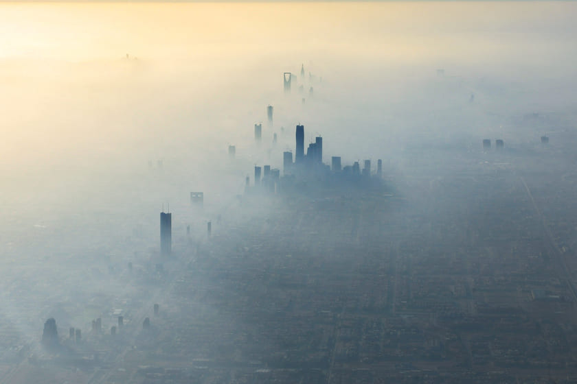
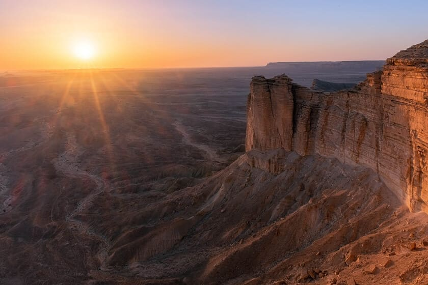
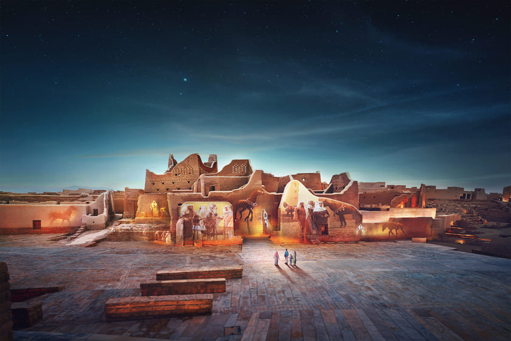

МЫ ДУМАЕМ ЧТО ЭТО СТРАНА ОЧЕНЬ ПОДХОДИТЬ ДЛЯ ПУТЕШЕСТВИЕ И НАДЕЕМСЯ ЧТО ВАМ ПОНРАВИТСЯ НАШ ВЫБОР
Путешествие в загадочную Саудовскую Аравию
Саудовская Аравия — одна из самых загадочных стран мира. Длительное время она была недоступна для иностранных туристов, но наконец-то раскрывает им свои объятия. Атмосферный Эр-Рияд, невероятный Аль-Ула, зеленые оазисы Аль-Ахса и Фарасан, первоклассные курорты Красного моря, священные паломнические города Мекка и Медина — туристический потенциал Саудовской Аравии огромный! Королевство станет настоящим открытием для искателей незабываемых впечатлений. Здесь понравится и ценителям природной красоты, и неутомимым исследователям морских глубин, и почитателям многовековой истории. А от неожиданного контраста традиций и современности будет перехватывать дыхание на каждом шагу. Рассказываем о трех интересных направлениях для вашего идеального знакомства с Саудовской Аравией.
Эр-Рияд — удивительное сочетание традиций и современности
Столица и крупнейший город Саудовской Аравии — Эр-Рияд — воплощение красоты и величия королевства. Место, где очарование и шарм древнего города сочетаются с сумасшедшим ритмом современного мегаполиса. Увлекательную многовековую историю Эр-Рияда можно ощутить на его суетливых базарах, в интересных музеях и старинной архитектуре, но это также и преуспевающий финансовый, деловой центр с богатой культурной жизнью. Здесь расположен один из крупнейших университетов мира (им. Короля Сауда) и самый высокий в королевстве небоскреб Бурдж Аль-Мамляка (99 этажей), открыто более 4000 мечетей, десятки отелей, ресторанов, торговых и развлекательных центров. Посетите Эр-Рияд, чтобы почувствовать вкус старой Аравии и насладиться всеми благами XXI века.
Самое привлекательное время для путешествий в столицу — конец осени, зима, начало весны, когда средняя температура воздуха днем не поднимается выше 26 °C. Многие захватывающие маршруты будут ждать вас и в окрестностях города.

ДИРИЯ
В нескольких минутах езды от Эр-Рияда находится «жемчужина Саудовской Аравии» — город Дирия — первая столица независимого арабского государства. Его история насчитывает нескольких тысячелетий: с давних времен здесь проходил путь торговцев и паломников из Азии, Африки и Европы, также город был первой резиденцией правящей королевской династии Аль Сауд. С 2010 года исторический центр Дирии, район Ат-Тураиф, охраняется ЮНЕСКО. Это своеобразный музей под открытым небом, где сохранились руины старинных дворцов и мечетей, соединенные узкими переулками.
Край света (Джебель Фихрайн)
Почувствуйте себя на краю света, стоя на вершине отвесной скалы Джебель Фихрайн. Это впечатляющее место находится в полутора часах езды от столицы, и является частью горной цепи острых скал, простирающейся на 600 километров с юга к востоку Саудовской Аравии.

Аль-Ула — виды за пределами воображения
Среди пустыни и гор региона Аль-Ула на северо-западе Саудовской Аравии путешественники смогут представить себя отважными археологами. Это один из самых живописных и важных с исторической точки зрения регионов Саудовской Аравии. Здесь расположен первый в Саудовской Аравии объект всемирного наследия ЮНЕСКО — набатейский город Хегра и колоритный Старый город Аль-Улы, заселенный в недавнем прошлом. Вы увидите древние гробницы, естественные скальные образования и каньоны, художественные инсталляции, а еще тут множество возможностей для экстремальных видов спорта. С 2018 года в регионе проходит атмосферный фестиваль «Зима на Танторе», к открытию которого здесь возвели уникальный концертный зал «Мерайя». Со всех сторон здание зала облицовано зеркальными панелями и смотрится как мираж посреди пустыни.
